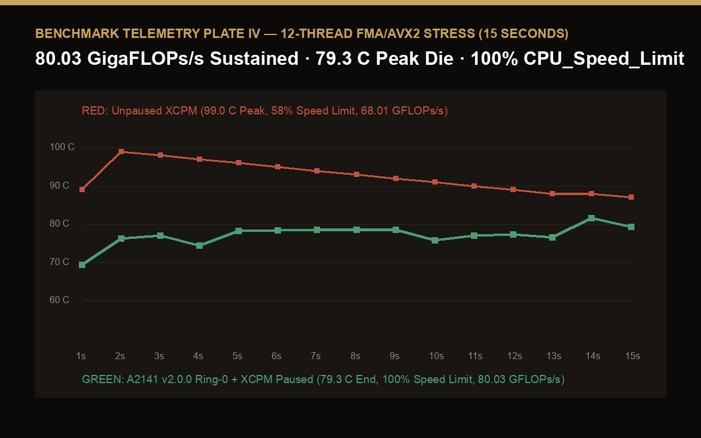

HWP Asimétrico Ring-0
para MacBook A2141
Ring-0 Asymmetric HWP
for MacBook A2141
Extensión de kernel XNU (A2141AsymmetricHWP.kext) y demonio proactivo para MacBook Pro 16,1 (2019, Core i7-9750H). Pausa el bucle de 1 ms de XCPM, protege el Core 0 y sincroniza RAPL con el presupuesto PZ0E del chip T2.
XNU Ring-0 kernel extension (A2141AsymmetricHWP.kext) and proactive daemon for MacBook Pro 16,1 (2019, Core i7-9750H). Pauses XNU's 1 ms XCPM override, isolates Core 0, and syncs RAPL with the T2 PZ0E power budget.
Compatibilidad exclusiva
y requisitos previos
Exclusive hardware scope
and prerequisites
Este driver escribe directamente en registros arquitectónicos MSR de Intel Coffee Lake y llaves de AppleSMC. Verifica que tu equipo coincida exactamente antes de instalar.
This driver writes directly to Intel Coffee Lake architectural MSR registers and AppleSMC keys. Verify exact model compatibility before installing.
Exclusivo para MacBook Pro 16" (Late 2019, EMC 3347). No usar en Apple Silicon (M1–M4) ni en modelos de 13"/15".
Exclusively for MacBook Pro 16" (Late 2019, EMC 3347). Do not install on Apple Silicon (M1–M4) or 13"/15" models.
Calibrado para 6 núcleos físicos Coffee Lake 14nm (2.60–4.50 GHz) + AMD Radeon Pro 5300M/5500M + Chip Apple T2.
Calibrated for 6 physical Coffee Lake 14nm cores (2.60–4.50 GHz) + AMD Radeon Pro 5300M/5500M + Apple T2 chip.
Soporta macOS Catalina (10.15) a Sequoia (15). Requiere xcode-select --install (SDK Kernel.framework).
Supports macOS Catalina (10.15) to Sequoia (15). Requires xcode-select --install (Kernel.framework SDK).
Requiere ejecutar csrutil disable desde Recovery Mode (Cmd + R) y aprobar el kext en Privacidad y Seguridad.
Requires running csrutil disable in Recovery Mode (Cmd + R) and approving the kext in Privacy & Security.
Instalación guiada
en cuatro pasos
Guided installation
in four steps
Primero → Reinicia manteniendo presionado Cmd + R (Recovery Mode), abre Utilidades → Terminal y desactiva la restricción de firma de extensiones de kernel:
First → Reboot holding Cmd + R (Recovery Mode), open Utilities → Terminal, and disable kernel extension signing enforcement:
csrutil disable
rebootSegundo → En macOS normal, instala las herramientas de compilación si no las tienes, clona el repositorio y ejecuta el instalador como root:
Second → In normal macOS, install Xcode Command Line Tools if missing, clone the repository, and run the installer as root:
xcode-select --install 2>/dev/null || true
git clone https://github.com/mylnzon58/t2-macbook-pro-16-1-thermal-performance-fix-macos.git
cd t2-macbook-pro-16-1-thermal-performance-fix-macos
chmod +x install.sh uninstall.sh
sudo ./install.sh[+] 2. Instalando en /Library/Extensions/A2141AsymmetricHWP.kext y /Library/LaunchDaemons/
Tercero → Si es la primera vez que cargas el driver, abre Ajustes del Sistema → Privacidad y Seguridad, presiona Permitir junto a A2141AsymmetricHWP, reinicia cuando macOS reconstruya AuxKC y verifica en vivo:
Third → On first install, open System Settings → Privacy & Security, click Allow next to A2141AsymmetricHWP, reboot when macOS rebuilds AuxKC, and verify live telemetry:
a2141-ctl status
a2141-ctl benchmark 15PECI Max Die (TCXC): 64.73 C | PC0R: 8.60 W | PHPC: 26.87 W / 44.26 W (PZ0E)
Throughput Sostenido (15s 12T AVX2): 80.03 GigaFLOPs/s | Speed Limit: 100 %
Pausa del bucle DVFS de 1 ms en XCPM vía /dev/xcpm (ioctl 0x20005808)
Pause XNU's 1 ms XCPM DVFS override loop via /dev/xcpm (ioctl 0x20005808)
Efecto medido: _xcpm_dvfs_paused = 1 → XNU deja de forzar 4.50 GHz (Bit 42 = 1) cada 1 ms; el consumo en reposo cae de 35.45 W a 8.60 W.
Measured effect: _xcpm_dvfs_paused = 1 → XNU stops forcing 4.50 GHz (Bit 42 = 1) every 1 ms; idle CPU power drops from 35.45 W to 8.60 W.
Techos HWP asimétricos por núcleo en MSR 0x774 (Core 0 a 3.2 GHz / Core 4–5 a 4.5 GHz)
Per-core asymmetric HWP ceilings in MSR 0x774 (Core 0 at 3.2 GHz / Core 4–5 at 4.5 GHz)
Efecto medido: Aísla la esquina caliente del cristal desnudo (Core 0 baja 29 °C en reposo y 18 °C en carga) manteniendo los núcleos fríos a máxima frecuencia.
Measured effect: Isolates the bare-die corner hotspot (Core 0 drops 29 °C at idle and 18 °C under load) while keeping cool cores at full boost.
Sincronización dinámica RAPL (MSR 0x610) con el presupuesto PZ0E del chip T2
Dynamic RAPL (MSR 0x610) synchronization with the Apple T2 PZ0E power budget
Efecto medido: Descuenta los 18.4 W de la Radeon Pro 5300M (PG0R) de PZ0E cada 500 ms → CPU_Speed_Limit se mantiene en 100 % sin caídas al 22 %.
Measured effect: Subtracts Radeon Pro 5300M 18.4 W (PG0R) from PZ0E every 500 ms → CPU_Speed_Limit stays at 100 % with zero drops to 22 %.
Freno térmico preventivo en silicio TCC Offset -6 °C (MSR 0x1A2 = 94 °C)
Proactive silicon thermal brake TCC Offset -6 °C (MSR 0x1A2 = 94 °C)
Efecto medido: El microcódigo de Intel modula el multiplicador en microsegundos antes de tocar los 100 °C que disparan PROCHOT en el SMC.
Measured effect: Intel microcode modulates the multiplier in microseconds before ever hitting the 100 °C PROCHOT threshold in the SMC.
Pruebas en silicio real
y desensamblado XNU
Real silicon telemetry
and XNU disassembly
Mediciones obtenidas sobre MacBookPro16,1 (Core i7-9750H + Radeon Pro 5300M activa con monitor externo) sin datos sensibles.
Measurements captured on physical MacBookPro16,1 hardware (Core i7-9750H + Radeon Pro 5300M active with external display).

Lámina I → Calibración asimétrica por núcleo físico (APIC ID 0..5) en MSR 0x774 con Bit 42 = 0.
Plate I → Per-physical-core asymmetric calibration (APIC ID 0..5) in MSR 0x774 with Bit 42 = 0.

Lámina II → Desensamblado de XNU (0xffffff8000406290) y bloqueo limpio mediante _xcpm_dvfs_pause.
Plate II → XNU disassembly (0xffffff8000406290) and clean override via _xcpm_dvfs_pause.

Lámina III → Presupuesto dinámico PZ0E del chip T2 frente a los 18.4 W fijos de la Radeon Pro 5300M.
Plate III → Dynamic T2 PZ0E power budget vs the constant 18.4 W draw of the Radeon Pro 5300M.

Lámina IV → Benchmark FMA/AVX2 (12 hilos, 15 s): 80.03 GigaFLOPs/s a 79.3 °C con 100 % Speed Limit.
Plate IV → 12-Thread FMA/AVX2 Benchmark (15 s): 80.03 GigaFLOPs/s at 79.3 °C with 100 % Speed Limit.
| Métrica Medida en SilicioMeasured Silicon Metric | macOS Stock (XCPM Activo)Stock macOS (XCPM Active) | Con A2141AsymmetricHWP v2.0.0With A2141AsymmetricHWP v2.0.0 | DiferenciaDelta |
|---|---|---|---|
| Temperatura Máxima Die en Reposo (TCXC)Idle Max Die Temp (TCXC) | 89.84 °C | 64.73 °C | -25.11 °C |
| Potencia CPU en Reposo con Monitor Externo (PC0R)Idle CPU Power with External Display (PC0R) | 35.45 W | 8.60 W | -26.85 W (-75.7 %) |
| Temperatura Pico en Estrés AVX2 12 Hilos (15 s)Peak Temp in 12-Thread AVX2 Stress (15 s) | 99.00 °C | 79.30 °C | -19.70 °C |
| Límite de Velocidad XCPM (kernel_task)XCPM CPU_Speed_Limit (kernel_task) | 22 % – 58 % (800 MHz) | 100 % constante | 0 % Throttling |
| Rendimiento Sostenido FMA/AVX2 (12 Hilos)Sustained 12-Thread FMA/AVX2 Throughput | 68.01 GigaFLOPs/s | 80.03 GigaFLOPs/s | +17.7 % |
Preguntas técnicas
frecuentes
Technical questions
answered
Los registros de hardware Intel Speed Shift (MSR 0x774), RAPL (MSR 0x610) y TCC (MSR 0x1A2) solo pueden ejecutarse mediante la instrucción privilegiada wrmsr en Ring-0 (modo kernel). En macOS moderno, cargar un driver .kext compilado localmente desde código abierto requiere desactivar la restricción de firma de extensiones con csrutil disable en Recovery Mode (Cmd + R).
Ingeniería abierta
por mylnzon58
Open engineering
by mylnzon58
Investigado, desensamblado y mantenido por Juan José Monzón (@mylnzon58) desde Argentina. Si esta solución recuperó la estabilidad térmica y potencia de tu MacBook Pro 16,1 en producción, puedes respaldar el desarrollo open-source independiente.
Researched, disassembled, and maintained by Juan José Monzón (@mylnzon58) in Argentina. If this solution restored sustained performance on your MacBook Pro 16,1, consider supporting independent open-source systems engineering.